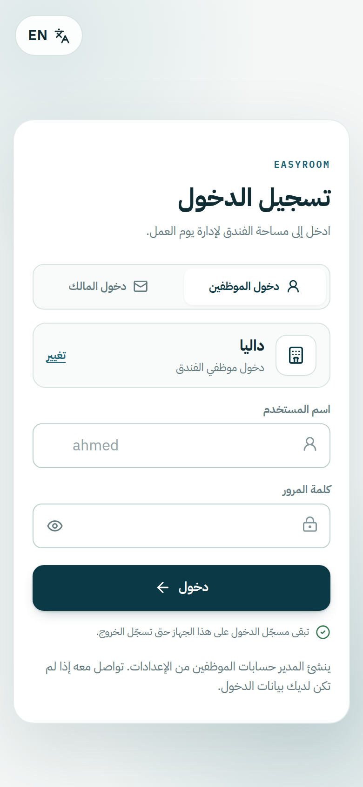
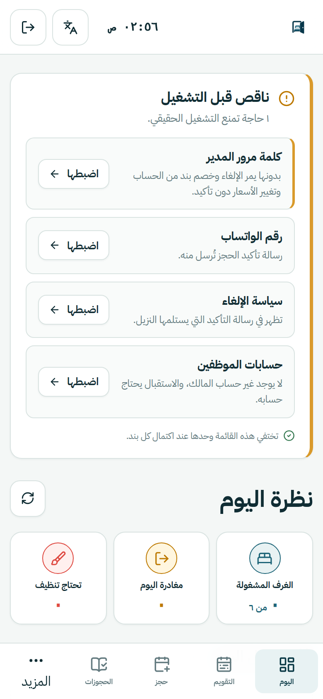
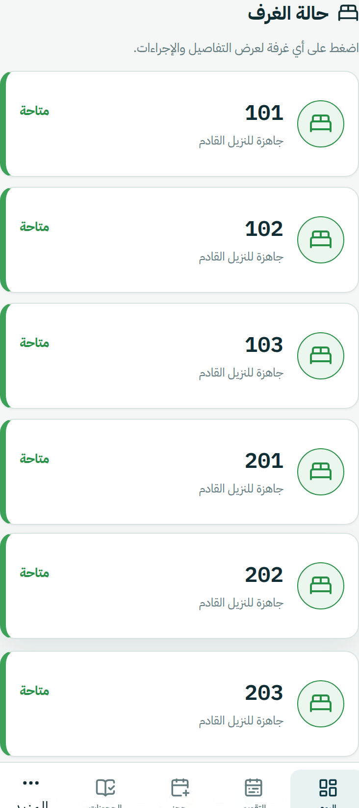
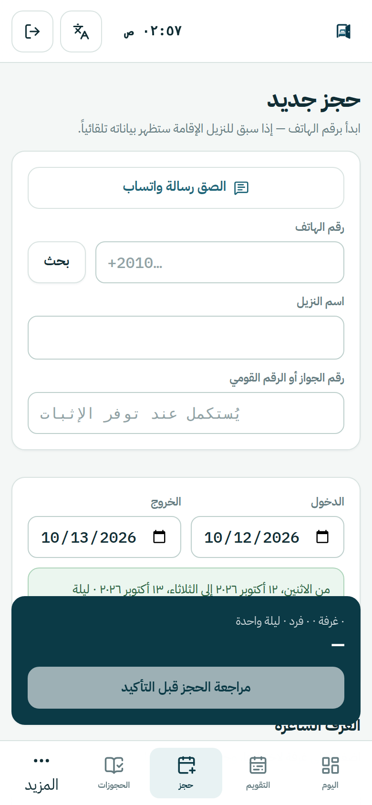
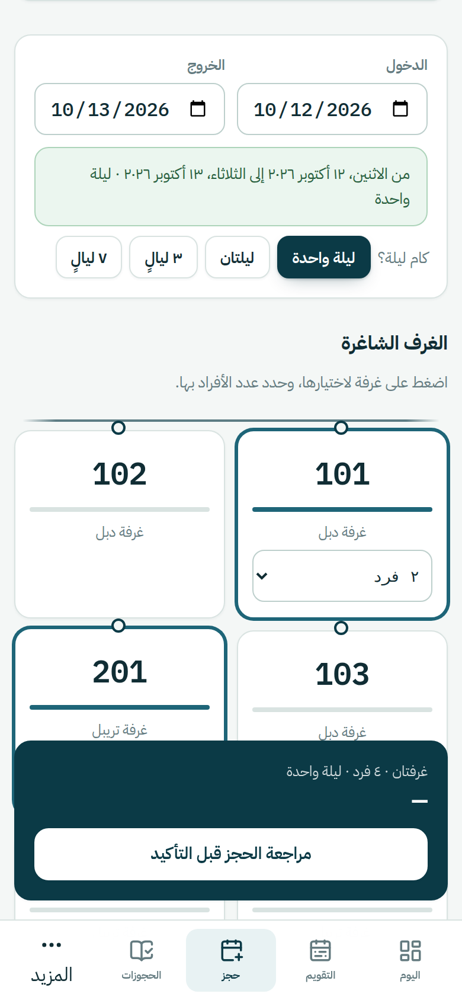
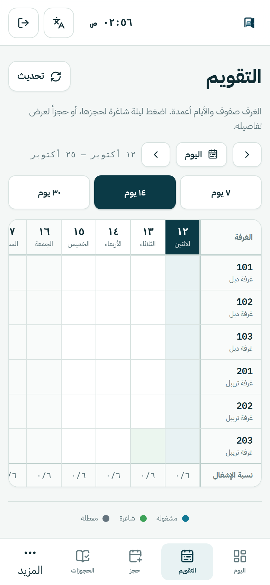
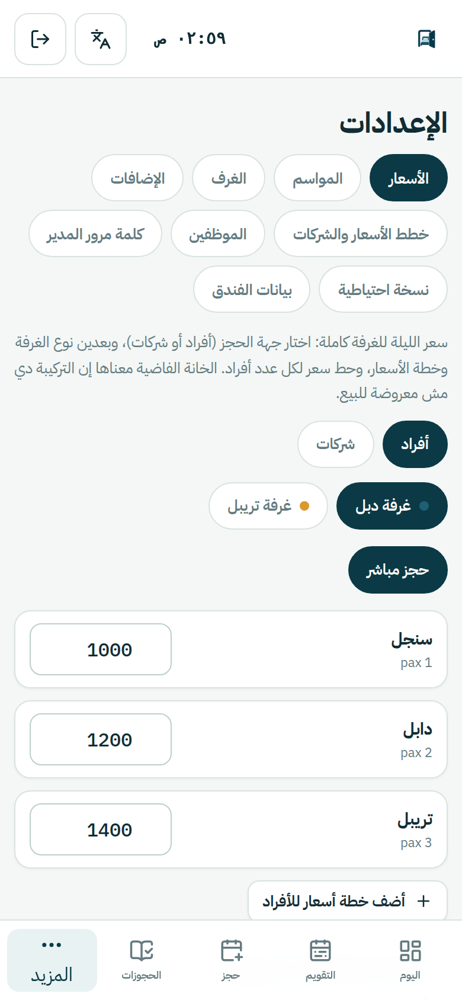
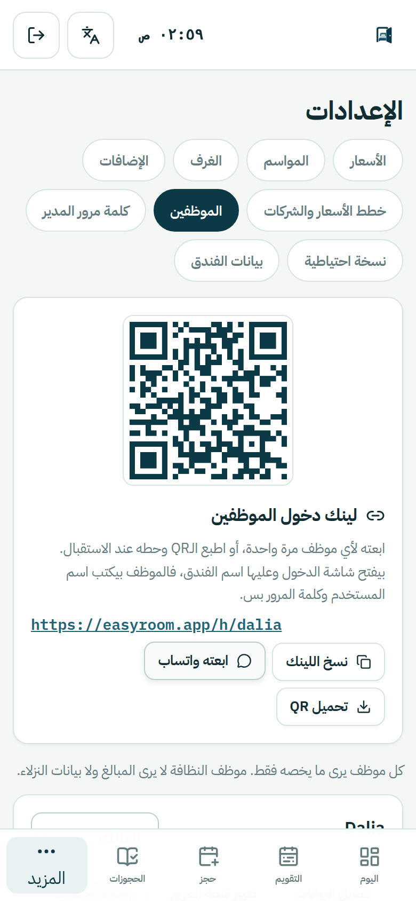

كل شاشة وكل زرار في EasyRoom، خطوة بخطوة وبالصور — من تجهيز الفندق أول يوم، لحد الحجز والتسكين والخروج والفلوس والتقارير.
نظام لإدارة الفندق: الحجوزات والغرف والأسعار والنزلاء والفلوس والنظافة في مكان واحد. بيشتغل من المتصفح على الموبايل أو الكمبيوتر، بالعربي والإنجليزي، ومن غير ما يتحمّل حاجة من أي متجر.
| الميزة | يعني إيه عملياً |
|---|---|
| مفيش حجز مزدوج | مستحيل غرفة تتحجز مرتين في نفس الليلة، حتى لو موظفين ضغطوا في نفس الثانية. |
| السعر بيتحسب لوحده | من نوع الغرفة وعدد الأفراد ونوع العميل (أفراد أو شركات) والموسم — ليلة بليلة. |
| شغّال لما النت يقطع | الاستقبال بيشوف الغرف ويسكّن ويخرّج، واللي اتعمل بيتبعت لوحده أول ما النت يرجع. |
| كل موظف شايف شغله بس | أربع أدوار: مالك، مدير، استقبال، نظافة. عامل النظافة مبيشوفش حجوزات ولا فلوس. |
| قفل على الفلوس | الإلغاء والخصم وتقصير الإقامة وتغيير الأسعار بيطلبوا كلمة مرور المدير. |
| أوراق النزيل بلغته | رسالة التأكيد وبيان الحساب وإثبات الحجز بخمس لغات. |
| كل حاجة متسجّلة | سجل عمليات بيقول مين عمل إيه وإمتى، ومحدش يقدر يمسح منه. |
كل فندق ليه لينك دخول خاص زي easyroom.app/h/nile-hotel — آخر كلمة فيه هي رمز الفندق. المدير بيبعته للموظفين مرة واحدة، أو بيطبع الـQR بتاعه ويحطه عند الاستقبال.

الجهاز بيفتكر الفندق، والجلسة بتفضل مفتوحة لحد ما تضغط «خروج».
| الموقف | تعمل إيه |
|---|---|
| فتحت easyroom.app من غير لينك | هيطلب رمز الفندق مرة واحدة. أول ما يتكتب صح، اسم الفندق بيظهر تحته بعلامة ✓. لو غلط هيقول «مفيش فندق بالرمز ده». |
| الجهاز فاكر فندق تاني | اضغط «تغيير» جنب اسم الفندق، أو افتح لينك فندقك — اللينك بيكسب. |
| نسيت كلمة المرور (موظف) | المدير بيغيّرها من الإعدادات ← الموظفين. |
| نسيت كلمة المرور (مالك بالبريد) | «نسيت كلمة المرور؟» تحت الخانة، وبيوصلك لينك على الإيميل. |
| عايز التطبيق إنجليزي | زرار اللغة فوق في أي شاشة — حتى شاشة الدخول. |
للمالك أو المدير. أول ما تدخل، شاشة اليوم بتعرض قايمة «ناقص قبل التشغيل» — كل بند ليه زرار اضبطها بيوديك مكانه، والقايمة بتختفي لوحدها لما تخلص.

رتّب الإعداد كده — كل خطوة في الإعدادات:
لو مش متحطوطة، الإلغاء والخصم وتغيير الأسعار بيعدّوا من غير ما حد يسأل.
في الموبايل القايمة تحت (والباقي في «المزيد»)، وفي الكمبيوتر على الجنب. كل موظف بيشوف الشاشات اللي دوره يسمح بيها بس.
| الشاشة | بتعمل إيه |
|---|---|
| اليوم | شاشة الاستقبال طول اليوم: حالة كل غرفة، ومين واصل النهاردة، والتنبيهات. |
| التقويم | الغرف صفوف والأيام أعمدة — «عندكم فاضي يوم كذا؟». |
| حجز جديد | الحجز بنفس ترتيب المكالمة: مين، إمتى، أنهي غرفة، بكام. |
| الحجوزات | بحث وفلاتر، وورقة كل حجز بكل اللي ممكن يتعمل عليه. |
| النزلاء | السجل الرسمي لكل نزيل وتاريخ زياراته، وتصدير الكشف. |
| استمارة حجز | ورقة حجز رسمية بلوجو الفندق للنزيل. |
| النظافة | حالة نظافة كل غرفة بضغطة. |
| التقارير | الإشغال والإيراد والمتبقي ومصادر الحجز. |
| سجل العمليات | مين عمل إيه وإمتى. |
| الإعدادات | الأسعار والغرف والموظفين وبيانات الفندق. |

الشاشة اللي الاستقبال بيفتحها الصبح ويسيبها مفتوحة.
الشاشة مترتبة بنفس ترتيب المكالمة مع النزيل.


انسخ رسالة النزيل والصقها في الصق رسالة واتساب. التطبيق بيقرا منها الاسم والرقم والتواريخ وعدد الأفراد والغرف ويملا الخانات. مثال:
اللي اتملى بيتعلّم عليه عشان تراجعه قبل التأكيد، ومش بيمسح حاجة انت كتبتها.
تنبيه مش منع. لو فعلاً حجز تاني (عيلة في أوضتين) كمّل. لو لأ، عدّل الحجز القديم بدل ما تعمل واحد جديد.
| الإجراء | إزاي |
|---|---|
| دفعة | المبلغ وطريقة الدفع: كاش، إنستاباي، فودافون كاش، فيزا، تحويل. المتبقي بيتحسب لوحده. |
| إضافة على الحساب | فطار، عشاء، غسيل… من القايمة أو سطر بالإيد. |
| تمديد | من الغرفة في شاشة اليوم أو «تغيير التواريخ». التطبيق بيتأكد إن الغرفة فاضية الأيام الزيادة. |
| تغيير التواريخ | الوصول والخروج مع بعض، وكل غرف الحجز بتتحرك سوا والحساب بيتظبط. التقصير بيطلب كلمة مرور المدير. |
| نقل غرفة | من الغرفة في شاشة اليوم — التطبيق بيقترح غرف فاضية مناسبة. |
| خصم على غرفة | نسبة أو مبلغ أو سعر ثابت. بكلمة مرور المدير. |
النزيل ماشي قبل ميعاده؟ مغادرة مبكرة من ورقة الحجز — بتصلّح الليالي والحساب مع بعض (بكلمة مرور المدير).
الإقامة بتتقفل لوحدها اليوم اللي بعد ميعاد الخروج — مش في نفس اليوم، عشان النزيل اللي بيحاسب الساعة ١٢:٠٥ لسه نزيل. المبالغ مش بتتغيّر، والسجل بيكتبها «خروج تلقائي».
| الإجراء | إزاي |
|---|---|
| تعديل بيانات النزيل | من ورقة الحجز ← تعديل. |
| تغيير التواريخ | من ورقة الحجز — بدل ما تلغي وتحجز من الأول. |
| إلغاء | بسبب من قايمة: النزيل غيّر رأيه · تغيير تواريخ أو غرفة · حجز مكرر · غلط في التسجيل · سبب تاني. بكلمة مرور المدير. |
| لم يحضر | زي الإلغاء، مع رسم اختياري. بكلمة مرور المدير. |
الغلط بيتصحّح مش بيتمسح، وكل تصحيح بيتسجّل في سجل العمليات.
الدفع نفسه بيحصل كاش أو تحويل زي العادة، والتطبيق بيسجّله عشان الحساب يبقى مظبوط.
كلها من ورقة الحجز، وبلغة النزيل مش لغة الموظف.
| الورقة | فيها إيه | اللغات |
|---|---|---|
| رسالة تأكيد واتساب | الحجز والتواريخ والغرف والإجمالي وسياسة الإلغاء — بتتبعت بضغطة على واتساب النزيل. | ٥ لغات |
| بيان الحساب | كل ليلة وكل إضافة وكل دفعة والمتبقي — اللي النزيل بيطلبه وهو ماشي. | ٥ لغات |
| إثبات الحجز | ورقة رسمية بالحجز والمبالغ. طباعة أو PDF أو واتساب. | ٥ لغات |
| استمارة حجز | ورقة حجز رسمية بلوجو الفندق، من غير مبالغ — النزيل يمسكها معاه. | عربي / إنجليزي |
اللغات الخمسة: عربي، إنجليزي، روسي، ألماني، إيطالي.
من شاشة استمارة حجز أو من ورقة أي حجز. فيها طريقتين:
عليها اسم الفندق بالإنجليزي جنب اللوجو، وبيانات النزيل، والتواريخ مكتوبة بالشهر، ومواعيد الفندق، ومكان للتوقيع.

ده المكان اللي بيجاوب على «عندكم فاضي يوم كذا؟» في ثانية.
معمولة لعامل النظافة على الموبايل: الغرف اللي محتاجة شغل فوق، وكل غرفة ليها زرار.
| الحالة | معناها |
|---|---|
| تحتاج تنظيف | النزيل خرج والغرفة لسه ما اتنضفتش — بتتعمل لوحدها بعد تسجيل الخروج. |
| نظيفة | عامل النظافة خلّصها. |
| تمت مراجعتها | المشرف عاينها وجاهزة للنزيل. |
| معطلة | فيها عطل — مش بتتباع لحد ما تتصلّح. |
عامل النظافة مبيشوفش غير الشاشة دي: لا حجوزات ولا أسماء نزلاء ولا فلوس.
السجل الرسمي لكل نزيل: الاسم كامل، الجنسية، رقم الإثبات، تاريخ الميلاد. الضغط على أي نزيل بيوري كل إقاماته وإجمالي اللي دفعه.
للمالك والمدير. اختار المدة (٧ أيام، ٣٠، الشهر ده، ٩٠، أو من–لحد):
| الرقم | معناه |
|---|---|
| الإشغال | نسبة الليالي المباعة من المتاحة، ورسم يوم بيوم. |
| الإيراد | الغرف لوحدها، والإضافات لوحدها، والإجمالي. |
| ADR | متوسط سعر الليلة المباعة. |
| RevPAR | الإيراد على كل غرفة متاحة — بيقيس الإشغال والسعر مع بعض. |
| المحصّل والمتبقي | اللي اتقبض فعلاً وبأنهي طريقة، ومين لسه عليه فلوس (بزرار اتصال). |
| المصادر | الحجوزات جاية منين: واتساب، مكالمة، حضور، توصية… |
| الإلغاءات والخصومات | كام اتلغى وليه، وكام اتدّى خصم. |
وكل ده بيتصدّر Excel.
كل إجراء في التطبيق: حجز، تسكين، دفعة، إلغاء وسببه، تغيير سعر… مين عمله وإمتى. بفلاتر وبحث بالنزيل أو الموظف أو رقم الحجز. محدش يقدر يمسح منه — ولا المالك.
للمالك والمدير. تسع تبويبات، كل واحد بيجاوب سؤال واحد.


| التبويب | السؤال | اللي فيه |
|---|---|---|
| الأسعار | بكام الليلة؟ | سعر لكل نوع غرفة × عدد أفراد × خطة، مع زرار أفراد / شركات. ونسخ أسعار من نوع لنوع («زايد ٢٠٠» أو «زايد ١٠٪»). |
| المواسم | إمتى السعر بيختلف؟ | أسعار مختلفة لفترة بتاريخ — بتتحسب ليلة بليلة. |
| الغرف | عندي إيه؟ | أنواع الغرف (اسم وسعة) والغرف نفسها. |
| الإضافات | ببيع إيه غير الغرفة؟ | فطار، نقل، غسيل… بسعر لكل صنف. |
| خطط الأسعار والشركات | ببيع لمين وبأي شروط؟ | الشركات والوكالات، وخطط الأسعار: لأفراد ولا شركات، واللي مشمول في السعر. |
| الموظفين | مين بيشتغل؟ | لينك الفندق والـQR، وحساب لكل موظف بدوره، وتغيير الدور وكلمة المرور، والإيقاف. |
| كلمة مرور المدير | مين يقرر في الفلوس؟ | القفل التاني — القسم ١٦. |
| نسخة احتياطية | لو حصل حاجة؟ | تحميل نسخة كاملة كملف، واستردادها. |
| بيانات الفندق | إحنا مين؟ | الاسم عربي وإنجليزي، اللوجو، اللون، واتساب، العنوان، سياسة الإلغاء، العملة، رمز الدولة، التوقيت، ومواعيد الوصول والخروج. |
| الشاشة | مالك | مدير | استقبال | نظافة |
|---|---|---|---|---|
| اليوم، التقويم، حجز جديد، الحجوزات، النزلاء، استمارة حجز | ✓ | ✓ | ✓ | — |
| النظافة | ✓ | ✓ | ✓ | ✓ |
| التقارير، سجل العمليات، الإعدادات | ✓ | ✓ | — | — |
المالك والمدير متساويين في الصلاحيات جوه الفندق.
مش كلمة مرور دخول. دي قفل على إحدى عشر قرار فيهم فلوس:
إلغاء حجز · لم يحضر · مغادرة مبكرة · تقصير إقامة · إلغاء غرفة من حجز · إلغاء سطر من الحساب · خصم على غرفة · حفظ الأسعار · حفظ موسم · حذف موسم · حفظ خطة أسعار.
الاستقبال شايف الأزرار دي، بس مبيقدرش ينفّذها لوحده — المدير بيكتب الكلمة على نفس الجهاز.
| شغّال من غير نت | محتاج نت |
|---|---|
| تشوف الغرف والحجوزات المحفوظة | تأكيد حجز جديد |
| تسجيل وصول وخروج | تسجيل دفعة |
| تعليم النظافة | الإضافات على الحساب |
| حجز مبدئي | التقارير |
بيظهر شريط أصفر فوق بيقول إنك من غير نت، واللي اتعمل بيتبعت لوحده أول ما النت يرجع.
بيتكتب على الجهاز، والغرفة مش محجوزة فعلاً لحد ما النت يرجع. لو الغرفة اتاخدت في الوقت ده، التطبيق بيقولك إنه اترفض.
| إمتى | اللي بيحصل |
|---|---|
| قبل النهاية بأسبوعين | المالك والمدير بيشوفوا شريط أصفر فوق بتاريخ النهاية. |
| بعد التاريخ (فترة سماح، عادة ٧ أيام) | التطبيق شغّال عادي، والكل — حتى الاستقبال — بيشوف شريط أحمر بتاريخ القفل. |
| بعد فترة السماح | الدخول بيقف، وبتظهر شاشة «اشتراك الفندق انتهى». |
أول ما الاشتراك يتجدد، كل حاجة بترجع زي ما كانت. والتجديد بدري مبيضيّعش أيام — بيتحسب من نهاية الاشتراك الحالي.
| السؤال | الإجابة |
|---|---|
| بياناتي في أمان؟ | كل فندق معزول في قاعدة البيانات نفسها. محدش من فندق تاني يقدر يشوف حاجة، وحتى إدارة EasyRoom مبتشوفش نزيل ولا حجز ولا مبلغ. |
| محتاج أنزّل برنامج؟ | لا. من المتصفح على أي موبايل أو كمبيوتر، وينفع يتحط على الشاشة الرئيسية. |
| كام موظف ينفع؟ | أي عدد، كل واحد بحسابه ودوره. لما حد يمشي، حسابه بيتوقف وسجله بيفضل. |
| عندي أكتر من فندق | نفس الحساب يقدر يكون في أكتر من فندق ويبدّل بينهم من فوق، وكل فندق بأسعاره وموظفينه. |
| لغات وعملات؟ | الشاشات عربي وإنجليزي، وأوراق النزيل بخمس لغات، والعملة والتوقيت لكل فندق. |
| أسعار الشركات والمواسم؟ | خطة لكل شركة، ومواسم بتاريخ، والسعر بيتحسب ليلة بليلة. |
| بيتعمل نسخة احتياطية لوحده؟ | النسخة الاحتياطية بتتحمّل من الإعدادات ← نسخة احتياطية. نزّل نسخة كل فترة واحتفظ بيها. |
| مربوط بـ Booking.com؟ | لا، مش متاح حالياً. الحجوزات اللي جاية من المواقع بتتسجّل بالإيد، ومصدرها «منصة حجز إلكترونية» عشان تبان في التقارير. |
| اللي بيحصل | السبب والحل |
|---|---|
| حجز إجماليه صفر | نوع الغرفة أو الخطة مش متسعّرين. الإعدادات ← الأسعار. |
| «مفيش أسعار أفراد/شركات» | الجهة دي مالهاش خطة. الإعدادات ← الأسعار ← الجهة ← «أضف خطة أسعار». |
| غيّرت عدد الأفراد والسعر ماتحركش | الخطة متسعّرة بنفس الرقم لكل عدد. مش عطل — غيّر الأسعار لو عايزها تفرق. |
| الغرفة مش ظاهرة في الحجز | محجوزة في الأيام دي، أو معطلة. شوف التقويم. |
| الإلغاء بيعدّي من غير كلمة مرور | مفيش كلمة مرور مدير متسجّلة. الإعدادات ← كلمة مرور المدير. |
| موظف مش عارف يدخل | ابعتله لينك الفندق تاني، واتأكد إنه على «دخول الموظفين» واسم الفندق ظاهر فوق، وإن حسابه مفعّل. |
| «مفيش فندق بالرمز ده» | الرمز مكتوب غلط. افتح لينك الفندق بدل ما تكتب الرمز. |
| الأوراق طالعة ناقصة | رقم الواتساب أو العنوان أو الاسم الإنجليزي مش متسجّل. الإعدادات ← بيانات الفندق. |
| «تم حجز الغرفة منذ لحظات» | حد سبقك بثواني. اختار غرفة تانية. |
| شريط أحمر «اشتراك الفندق خلص» | الاشتراك في فترة السماح. المالك يكلّم إدارة EasyRoom للتجديد قبل التاريخ اللي في الشريط. |
الدليل ده مكتوب من التطبيق نفسه، والصور من فندق تجريبي حقيقي عليه. لو حاجة في الشاشة خالفت الورقة، الشاشة هي الصح — بلّغ إدارة EasyRoom عشان الورقة تتصلّح.